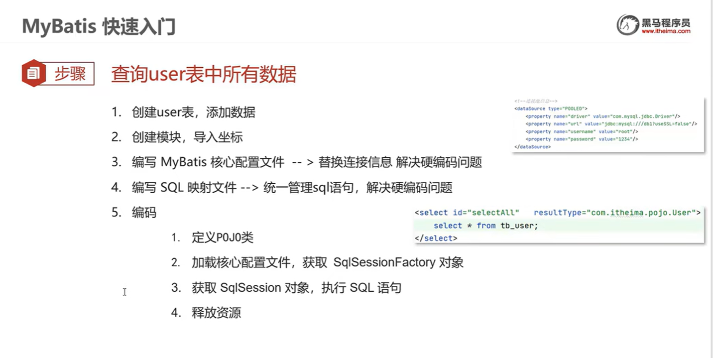
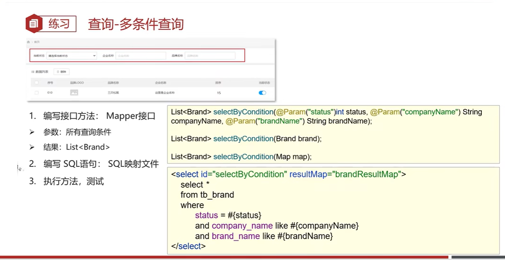

简介

mybatis 快速入门

create database if not exists mybatis;
use mybatis;
drop table if exists tb_user;
create table tb_user(
id int primary key auto_increment,
username varchar(20),
password varchar(20),
gender char(1),
addr varchar(30)
);
insert into tb_user values(1,'zhangsan','123','男','北京');
insert into tb_user values(2,'李四','456','女','天津');
insert into tb_user values(3,'王五','789','男','西安');
<?xml version="1.0" encoding="UTF-8"?>
<project xmlns="http://maven.apache.org/POM/4.0.0"
xmlns:xsi="http://www.w3.org/2001/XMLSchema-instance"
xsi:schemaLocation="http://maven.apache.org/POM/4.0.0 http://maven.apache.org/xsd/maven-4.0.0.xsd">
<modelVersion>4.0.0</modelVersion>
<!-- ... -->
<dependencies>
<!-- mybatis -->
<dependency>
<groupId>org.mybatis</groupId>
<artifactId>mybatis</artifactId>
<version>3.5.5</version>
</dependency>
<!-- mysql驱动 -->
<dependency>
<groupId>mysql</groupId>
<artifactId>mysql-connector-java</artifactId>
<version>5.1.46</version>
</dependency>
<!-- 测试 -->
<dependency>
<groupId>junit</groupId>
<artifactId>junit</artifactId>
<version>4.13</version>
<scope>test</scope>
</dependency>
<!-- slf4j日志 -->
<dependency>
<groupId>org.slf4j</groupId>
<artifactId>slf4j-api</artifactId>
<version>1.7.20</version>
</dependency>
<!-- logback -->
<dependency>
<groupId>ch.qos.logback</groupId>
<artifactId>logback-classic</artifactId>
<version>1.2.3</version>
</dependency>
<dependency>
<groupId>ch.qos.logback</groupId>
<artifactId>logback-core</artifactId>
<version>1.2.3</version>
</dependency>
</dependencies>
</project>
package org.malred;
import java.io.IOException;
import java.io.InputStream;
import java.util.List;
import org.apache.ibatis.io.Resources;
import org.apache.ibatis.session.SqlSession;
import org.apache.ibatis.session.SqlSessionFactory;
import org.apache.ibatis.session.SqlSessionFactoryBuilder;
import org.malred.entity.User;
public class MybatisDemo {
public static void main(String[] args) throws IOException {
// 1. 加载mybatis核心配置文件，获取SqlSessionFactory
String resource = "mybatis-config.xml";
InputStream inputStream = Resources.getResourceAsStream(resource);
SqlSessionFactory sqlSessionFactory = new SqlSessionFactoryBuilder().build(inputStream);
// 2. 获取SqlSession对象，用它执行sql
SqlSession sqlSession = sqlSessionFactory.openSession();
// 3. 执行sql
List<User> users = sqlSession.selectList("test.selectAll");
System.out.println(users);
// 4. 释放资源
sqlSession.close();
}
}
package org.malred.entity;
public class User {
private Integer id;
private String username;
private String password;
private String gender;
private String addr;
@Override
public String toString() {
return "{" +
" id='" + getId() + "'" +
", username='" + getUsername() + "'" +
", password='" + getPassword() + "'" +
", gender='" + getGender() + "'" +
", addr='" + getAddr() + "'" +
"}";
}
public Integer getId() {
return this.id;
}
public void setId(Integer id) {
this.id = id;
}
public String getUsername() {
return this.username;
}
public void setUsername(String username) {
this.username = username;
}
public String getPassword() {
return this.password;
}
public void setPassword(String password) {
this.password = password;
}
public String getGender() {
return this.gender;
}
public void setGender(String gender) {
this.gender = gender;
}
public String getAddr() {
return this.addr;
}
public void setAddr(String addr) {
this.addr = addr;
}
}
<!-- mappers/UserMapper.xml -->
<?xml version="1.0" encoding="UTF-8"?>
<!DOCTYPE mapper PUBLIC "-//mybatis.org//DTD Mapper 3.0//EN" "https://mybatis.org/dtd/mybatis-3-mapper.dtd">
<!-- 名称空间 -->
<mapper namespace="test">
<select id="selectAll" resultType="org.malred.entity.User">
select * from tb_user;
</select>
</mapper>
<!-- mybatis-config.xml -->
<?xml version="1.0" encoding="UTF-8"?>
<!DOCTYPE configuration PUBLIC "-//mybatis.org//DTD Config 3.0//EN" "https://mybatis.org/dtd/mybatis-3-config.dtd">
<configuration>
<environments default="development">
<environment id="development">
<transactionManager type="JDBC" />
<dataSource type="POOLED">
<property name="driver" value="com.mysql.jdbc.Driver" />
<property name="url" value="jdbc:mysql://localhost:3307/mybatis?useSSL=false" />
<property name="username" value="root" />
<property name="password" value="123456" />
</dataSource>
</environment>
</environments>
<mappers>
<mapper resource="mappers/UserMapper.xml" />
</mappers>
</configuration>
sql 语句警告
Mapper 代理开发
mvn 编译完，resources 里的文件都在一个目录下
如果要让 resources 里的 UserMapper 打包后（编译后）和我们接口类 UserMapper 在一个目录，则需要在 resources 下创建和接口类一样的包结构
<!-- mybatis-config.xml -->
<?xml version="1.0" encoding="UTF-8"?>
<!DOCTYPE configuration PUBLIC "-//mybatis.org//DTD Config 3.0//EN" "https://mybatis.org/dtd/mybatis-3-config.dtd">
<configuration>
<!-- ... -->
<mappers>
<mapper resource="org/malred/mappers/UserMapper.xml" />
</mappers>
</configuration>
<!-- org/malred/mappers/UserMapper.xml -->
<?xml version="1.0" encoding="UTF-8"?>
<!DOCTYPE mapper PUBLIC "-//mybatis.org//DTD Mapper 3.0//EN" "https://mybatis.org/dtd/mybatis-3-mapper.dtd">
<!-- 名称空间 -->
<mapper namespace="org.malred.mappers.UserMapper">
<select id="selectAll" resultType="org.malred.entity.User">
select * from tb_user;
</select>
</mapper>
package org.malred.mappers;
import java.util.List;
import org.malred.entity.User;
public interface UserMapper {
List<User> selectAll();
}
package org.malred;
import java.io.IOException;
import java.io.InputStream;
import java.util.List;
import org.apache.ibatis.io.Resources;
import org.apache.ibatis.session.SqlSession;
import org.apache.ibatis.session.SqlSessionFactory;
import org.apache.ibatis.session.SqlSessionFactoryBuilder;
import org.malred.entity.User;
import org.malred.mappers.UserMapper;
/**
* 代理开发
*/
public class MybatisDemo2 {
public static void main(String[] args) throws IOException {
// 1. 加载mybatis核心配置文件，获取SqlSessionFactory
String resource = "mybatis-config.xml";
InputStream inputStream = Resources.getResourceAsStream(resource);
SqlSessionFactory sqlSessionFactory = new SqlSessionFactoryBuilder().build(inputStream);
// 2. 获取SqlSession对象，用它执行sql
SqlSession sqlSession = sqlSessionFactory.openSession();
// 3. 执行sql
// 3.1 获取UserMapper接口的代理对象
UserMapper userMapper = sqlSession.getMapper(UserMapper.class);
List<User> users = userMapper.selectAll();
System.out.println(users);
// 4. 释放资源
sqlSession.close();
}
}
使用 package 批量指定 mapper
<?xml version="1.0" encoding="UTF-8"?>
<!DOCTYPE configuration PUBLIC "-//mybatis.org//DTD Config 3.0//EN" "https://mybatis.org/dtd/mybatis-3-config.dtd">
<configuration>
<!-- ... -->
<mappers>
<!-- <mapper resource="org/malred/mappers/UserMapper.xml" /> -->
<package name="org.malred.mappers" />
</mappers>
</configuration>
mybatis 核心配置文件
可以配置多数据源
以后整合 ssm 后，一般都是使用 spring 管理事务，所以这个标签没什么用
别名

<!-- UserMapper.xml -->
<?xml version="1.0" encoding="UTF-8"?>
<!DOCTYPE mapper PUBLIC "-//mybatis.org//DTD Mapper 3.0//EN" "https://mybatis.org/dtd/mybatis-3-mapper.dtd">
<!-- 名称空间 -->
<mapper namespace="org.malred.mappers.UserMapper">
<!-- <select id="selectAll" resultType="org.malred.entity.User"> -->
<!-- 配置完别名（org.malred.entity），可以省略org.malred.entity，并且类名可以不区分大小写 -->
<select id="selectAll" resultType="user">
select * from tb_user;
</select>
</mapper>
<?xml version="1.0" encoding="UTF-8"?>
<!DOCTYPE configuration PUBLIC "-//mybatis.org//DTD Config 3.0//EN" "https://mybatis.org/dtd/mybatis-3-config.dtd">
<configuration>
<typeAliases>
<package name="org.malred.entity" />
</typeAliases>
<!-- ... -->
</configuration>
写标签要按顺序（xml 的特点）
mybatis(crud) 案例
环境准备
他这个好像是内部网站？我用一开始的 User
查询
package org.malred;
import java.io.IOException;
import java.io.InputStream;
import java.util.List;
import org.apache.ibatis.io.Resources;
import org.apache.ibatis.session.SqlSession;
import org.apache.ibatis.session.SqlSessionFactory;
import org.apache.ibatis.session.SqlSessionFactoryBuilder;
import org.junit.After;
import org.junit.Before;
import org.junit.Test;
import org.malred.entity.User;
import org.malred.mappers.UserMapper;
public class UnitTest {
InputStream inputStream;
SqlSession sqlSession;
UserMapper userMapper;
@Before
public void before() throws IOException {
// 1. 加载mybatis核心配置文件，获取SqlSessionFactory
String resource = "mybatis-config.xml";
inputStream = Resources.getResourceAsStream(resource);
SqlSessionFactory sqlSessionFactory = new SqlSessionFactoryBuilder().build(inputStream);
// 2. 获取SqlSession对象，用它执行sql
sqlSession = sqlSessionFactory.openSession();
userMapper = sqlSession.getMapper(UserMapper.class);
}
@Test
public void selectAll() {
List<User> users = userMapper.selectAll();
System.out.println(users);
}
@After
public void after() throws IOException {
inputStream.close();
sqlSession.close();
}
}
查看详情
package org.malred.mappers;
import java.util.List;
import org.malred.entity.User;
public interface UserMapper {
// 查询所有
public List<User> findAll();
// 查询单个
public User findById(int id);
}
@Test
public void findById() {
User user = userMapper.findById(1);
System.out.println(user);
}
<?xml version="1.0" encoding="UTF-8"?>
<!DOCTYPE mapper PUBLIC "-//mybatis.org//DTD Mapper 3.0//EN" "https://mybatis.org/dtd/mybatis-3-mapper.dtd">
<!-- 名称空间 -->
<mapper namespace="org.malred.mappers.UserMapper">
<!-- <select id="selectAll" resultType="org.malred.entity.User"> -->
<!-- 配置完别名（org.malred.entity），可以省略org.malred.entity，并且类名可以不区分大小写 -->
<select id="findAll" resultType="user">
select * from tb_user;
</select>
<select id="findById" resultType="user">
select * from tb_user where id = #{id}
</select>
</mapper>
条件查询

package org.malred.mappers;
import java.util.List;
import java.util.Map;
import org.apache.ibatis.annotations.Param;
import org.malred.entity.User;
import org.malred.entity.UserDTO;
public interface UserMapper {
// 查询所有
List<User> findAll();
// 查询单个
User findById(int id);
// 条件查询
// 1. 散装参数：通过@Param("sql参数占位符名称")
// List<User> findByCondition(
// @Param("gender") String gender,
// @Param("username") String username,
// @Param("addr") String addr);
// 2. 对象参数：对象的属性名称要和参数占位符名称一致
// List<User> findByCondition(UserDTO userDTO);
// 3. Map参数：键的名称要和参数占位符名称一致
List<User> findByCondition(Map map);
}
@Test
public void findByCondition() {
List<User> users = null;
// users = userMapper.findByCondition("男", "%李%", "%东%");
// users = userMapper.findByCondition(new UserDTO("男", "%李%", "%东%"));
Map map = new HashMap();
map.put("gender", "男");
map.put("username", "%李%");
map.put("addr", "%东%");
users = userMapper.findByCondition(map);
System.out.println(users);
}
package org.malred.entity;
public class UserDTO {
String gender;
String username;
String addr;
public UserDTO(String gender, String username, String addr) {
this.gender = gender;
this.username = username;
this.addr = addr;
}
public UserDTO() {
}
public String getGender() {
return gender;
}
public void setGender(String gender) {
this.gender = gender;
}
public String getUsername() {
return username;
}
public void setUsername(String username) {
this.username = username;
}
public String getAddr() {
return addr;
}
public void setAddr(String addr) {
this.addr = addr;
}
}
<!-- UserMapper.xml -->
<?xml version="1.0" encoding="UTF-8"?>
<!DOCTYPE mapper PUBLIC "-//mybatis.org//DTD Mapper 3.0//EN" "https://mybatis.org/dtd/mybatis-3-mapper.dtd">
<!-- 名称空间 -->
<mapper namespace="org.malred.mappers.UserMapper">
<!-- ... -->
<select id="findByCondition" resultType="user">
select * from tb_user
where gender = #{gender}
and username like #{username}
and addr like #{addr}
</select>
</mapper>
动态条件查询
此时有个问题，我们必须所有条件都有值，但是又不能保证用户都输入，很不灵活

@Test
public void findByCondition() {
List<User> users = null;
users = userMapper.findByCondition(new UserDTO(null, "%李%", null));
System.out.println(users);
}
<select id="findByCondition" resultType="user">
select * from tb_user
<!--where 1=1-->
<where>
<if test="gender != null and gender!=''">
and gender = #{gender}
</if>
<if test="username != null and username != ''">
and username like #{username}
</if>
<if test="addr != null and addr != ''">
and addr like #{addr}
</if>
</where>
</select>
单条件动态查询
@Test
public void findByCondition() {
users = userMapper.findByConditionSingle(
new UserDTO("女", null, null));
System.out.println(users);
users = userMapper.findByConditionSingle(new UserDTO());
System.out.println(users);
}
/**
* 单条件动态查询
*
* @param userDTO
* @return
*/
List<User> findByConditionSingle(UserDTO userDTO);
<select id="findByConditionSingle" resultType="user">
select * from tb_user
<!--防止用户什么都不传(自动去掉和加and-->
<where>
<choose> <!--相对于switch-->
<when test="gender != null and gender!=''">
gender = #{gender}
</when>
<when test="username != null and username != ''">
username like #{username}
</when>
<when test="addr != null and addr != ''">
addr like #{addr}
</when>
<!--防止用户什么都不传-->
<!-- <otherwise>-->
<!-- 1 = 1-->
<!-- </otherwise>-->
</choose>
</where>
</select>
还可以用 where
添加
关闭了自动提交
创建 sqlsession 时可以设置自动提交
主键返回
@Test
public void save() {
User u = new User("韩梅梅", "123", "女", "上海");
userMapper.save(u);
// 提交事务
sqlSession.commit();
System.out.println(u.getId());
}
<insert id="save" useGeneratedKeys="true" keyProperty="id">
insert into tb_user (gender, username, addr)
values (#{gender}, #{username}, #{addr})
</insert>
/**
* 添加
*
* @param user
*/
void save(User user);
修改
修改全部字段
@Test
public void upt() {
User u = new User(9, "韩梅梅", "456", "女", "上海");
int count = userMapper.update(u);
// 提交事务
sqlSession.commit();
System.out.println("影响了" + count + "行");
}
<update id="update">
update tb_user
set
username = #{username},
gender = #{gender},
password = #{password},
addr = #{addr}
where id = #{id};
</update>
/**
* 修改
*
* @param user
* @return
*/
int update(User user);
修改动态字段
动态字段的问题
@Test
public void dynamic_upt() {
User u = new User(8, null, "456", null, null);
int count = userMapper.dynamicUpdate(u);
// 提交事务
sqlSession.commit();
System.out.println("影响了" + count + "行");
}
<update id="dynamicUpdate">
update tb_user
<!--防止逗号和所有值都null只剩set导致语法错误-->
<set>
<if test="username != null and username != ''">
username = #{username},
</if>
<if test="gender != null and gender != ''">
gender = #{gender},
</if>
<if test="password != null and password != ''">
password = #{password},
</if>
<if test="addr != null and addr != ''">
addr = #{addr}
</if>
</set>
where id = #{id};
</update>
/**
* 动态修改
*
* @param user
* @return
*/
int dynamicUpdate(User user);
删除
@Test
public void deleteById() {
userMapper.deleteById(8);
sqlSession.commit();
}
@Test
public void deleteByIds() {
userMapper.deleteByIds(new int[]{12, 13});
sqlSession.commit();
}
/**
* 根据id删除
*
* @param id
*/
void deleteById(int id);
/**
* 根据id批量删除
*
* @param ids
*/
void deleteByIds(@Param("ids") int[] ids);
<delete id="deleteById">
delete from tb_user where id = #{id};
</delete>
<delete id="deleteByIds">
delete from tb_user where id in
<foreach collection="ids" item="id" separator="," open="(" close=")">
#{id}
</foreach>
</delete>
参数传递

注解开发
@Test
public void findByIdUseAnnotation() {
User u = userMapper.findByIdUseAnnotation(1);
System.out.println(u);
}
@Select("select * from tb_user where id = #{id}")
User findByIdUseAnnotation(int id);